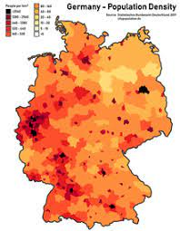

.png)
Demography of Germany
The demography of Germany is monitored by the Statistisches Bundesamt
(Federal Statistical Office of Germany). According to the most recent data, Germany's
population is 84,079,811 (30 June 2022) making it the most populous country in the
European Union, and the nineteenth-most populous country in the world. The total
fertility rate was rated at 1.58 in 2021, which is far below the replacement rate of
2.1. For a long time Germany had one of the world's lowest fertility rates of around 1.3
to 1.4 however there has been a small increase in recent years. Due to the low birth
rate there have been more deaths than births in Germany in every year since 1972,
which means 2021 was the 50th consecutive year the German population would have
decreased without immigration. But due to immigration the population has actually
increased during the last half-century: in 2019 the number of people with a foreign
background was 26%. Under this category there are counted foreigners, naturalized
citizens, ethnic German repatriates from east Europe and their children.
Until the early 20th century Germany was also a large emigrant nation with 5 million
people emigrating to the US alone from Germany in the Kaiserreich boundaries in the 19th
century and more than two million in the 20th century plus additional emigrants to Latin
America, Canada and eastern Europe. However after World War II immigration began to
outweigh emigration, as around 14 million ethnic Germans were expelled from the former
eastern Provinces of the Reich and other areas in eastern Europe of whom around 12
million made their way to present day Germany and several hundred thousand to Austria
and other countries while several hundred thousand died. Some additional 4.5 million
ethnic Germans from eastern Europe repatriated after 1950, especially around the end of
the Eastern Bloc and mostly from the former Soviet Union, Poland and Romania.

Population density
Large-scale immigration to West Germany began during the time of the Wirtschaftswunder
from the 1950s to early 1970s when Germany had a shortage of workers and let in Southern
Europeans from countries like Turkey, Italy and Spain on a temporary basis as guest
workers. The liberalisation of guest worker legislation allowed many to stay and build a
life in West Germany. Another large wave of immigration happened around reunification
when a large group of German repatriates but also many refugees arrived mostly from
former Yugoslavia due to the Yugoslav War and Bosnian War and from Turkey seeking asylum
in Germany. The next large immigration wave began after eastern Expansion of the
European Union in 2011 as Eastern Europeans were now allowed to live and work in Germany
without a visa. In 2015 Germany took in what was, in EU terms, a relatively large number
of refugees fleeing the Syrian civil war but also other conflicts in Iraq and
Afghanistan: 476,649 asylum seekers in 2015, 745,545 in 2016 and declining numbers after
that.
Germany has one of the world's highest levels of education, technological development,
and economic productivity. Since the end of World War II, the number of students
entering university has more than tripled, and the trade and technical schools are among
the world's best. With a per capita income of about €40,883 in 2018, Germany is a
broadly middle-class society. However, there has been a strong increase in the number of
children living in poverty. In 1965, one in 75 children was on the welfare rolls; but by
2007 this had increased to one child in six. These children live in relative poverty,
but not necessarily in absolute poverty. Millions of Germans travel overseas each
year. The social welfare system provides for universal health care, unemployment
compensation, child benefits and other social programmes. Germany's aging population and
struggling economy strained the welfare system in the 1990s, so the government adopted a
wide-ranging programme of – still controversial – belt-tightening reforms, Agenda 2010,
including the labour-market reforms known as Hartz concept.